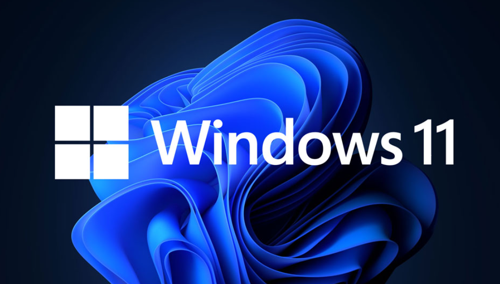

Here are some of the benefits of using Windows shortcut keys:
* Increased Efficiency: Shortcuts allow you to perform actions with just a few keystrokes, eliminating the need to navigate menus or use the mouse. This can significantly speed up your workflow.
* Improved Accuracy: Using shortcuts can minimize errors that can occur when using a mouse, especially when selecting specific options or items.
* Reduced Fatigue: By keeping your hands on the keyboard, you can reduce strain and fatigue associated with constantly switching between the mouse and keyboard.
* Swifter Navigation: Shortcuts let you bypass the mouse and menus, streamlining tasks like switching between windows (Alt + Tab) or minimizing all open windows (Win + M).
* Effortless File Management: Essential shortcuts for copying (Ctrl + C), cutting (Ctrl + X), and pasting (Ctrl + V) expedite file manipulation.
* Enhanced Multitasking: Snap Assist (Win + arrow keys) enables efficient window organization by snapping them to specific screen zones, while Task View (Win + Tab) offers a quick overview of all open windows and desktops.
* Streamlined Search: The Windows search bar (Win + S) lets you instantly search for files, applications, or settings, eliminating the need to navigate through folders.
Mastering these shortcuts can significantly improve your workflow and free up valuable time for other tasks.

b) Windows 11 keyboard shortcuts can significantly enhance productivity by allowing users to perform tasks more quickly and efficiently. Here are some ways how:* Quick Access: Shortcuts like Win + E to open File Explorer or Win + S for Windows Search provide instant access to common tools and functions.
* Task Management: Win + Tab opens Task View, enabling easy switching between multiple desktops and applications.
* Clipboard Management: Win + V opens Clipboard History, letting you paste previously copied items without having to copy them again.
* Screen Capturing: Win + Shift + S opens the Snipping Tool for taking screenshots, which is useful for capturing information quickly.
* Special Characters: Win + . (period) opens a panel for emojis, symbols, and GIFs, making it easier to express ideas.
By reducing the need for mouse navigation and streamlining workflows, these shortcuts save time and make multitasking more manageable. For a comprehensive list of Windows 11 shortcuts, you can refer to guides provided by PCMag and The Windows Club